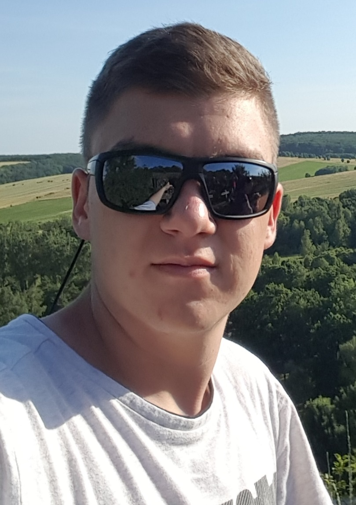

Ha bármiben segítségére lehetek, az alábbi elérhetőségeken keresztül felveheti velem a kapcsolatot:
Email: varga.balazs5@gmail.com
Facebook: Varga Balázs

"A vas berozsdásodik, ha nem használják. Az állóvíz elveszíti tisztaságát, és megfagy a hidegben.
Ugyanígy veszi el a tétlenség az elme erejét"
- Leonardo da Vinci